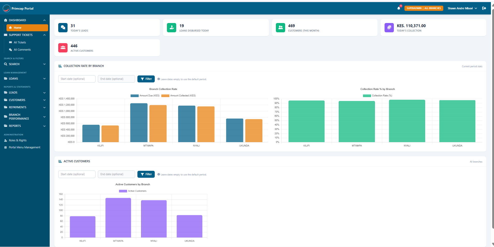
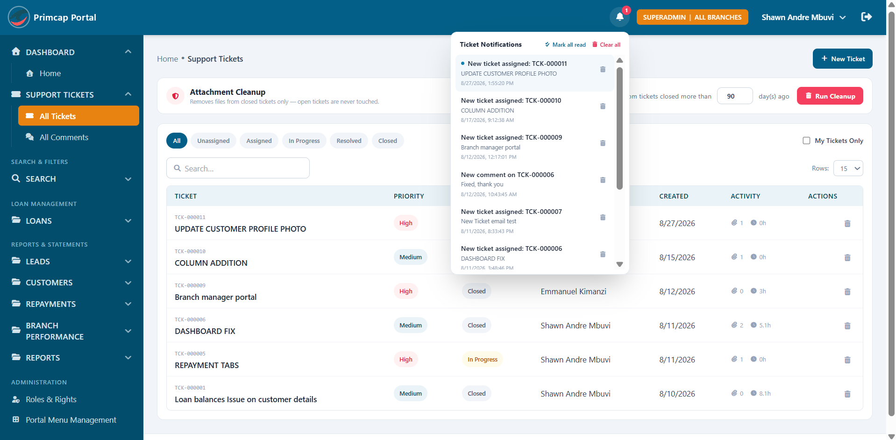
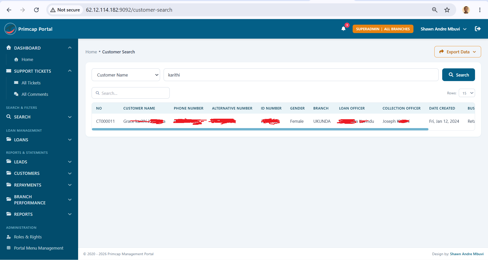
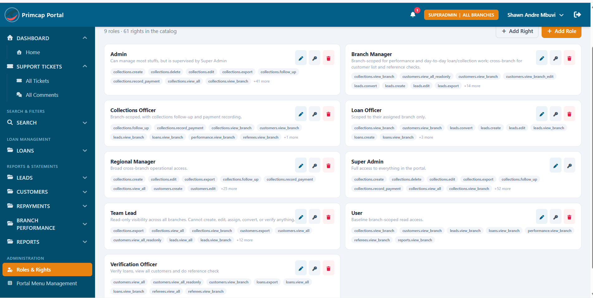
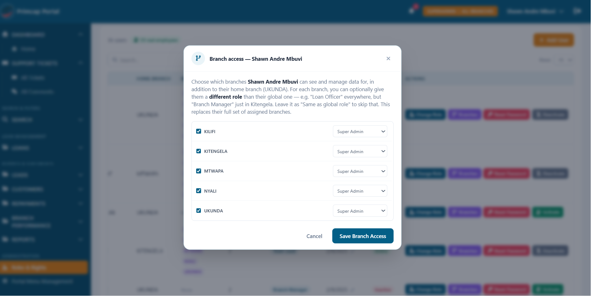
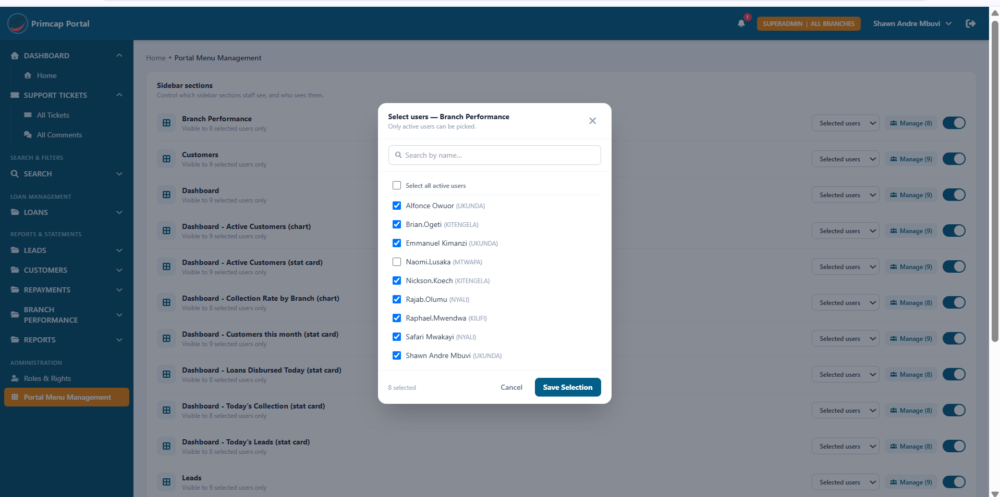
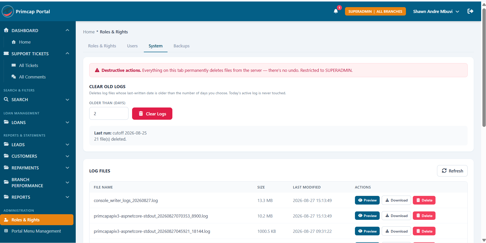
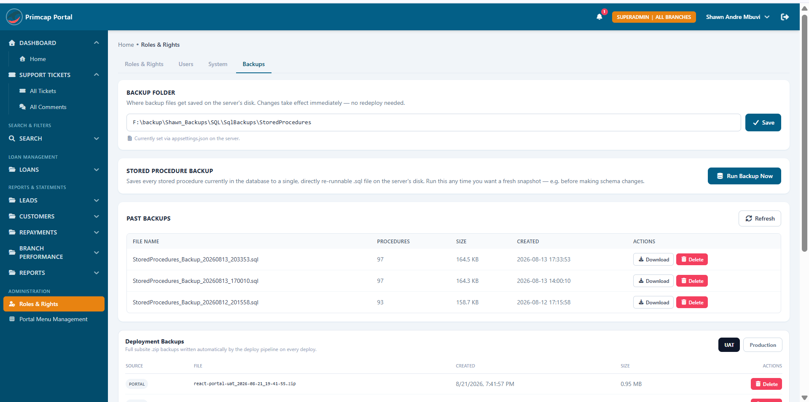

An internal operations portal for a multi-branch microfinance lender — leads, loans, collections, and branch performance in one dashboard, with a role and menu-visibility system precise enough to control individual dashboard widgets per user.
What staff see first — same-day figures rolled up by branch, and the day-to-day tools built around them.

Today's leads, loans disbursed, this month's customers, and today's collection at a glance, with collection rate and active-customer charts broken out by branch (Kilifi, Kitengela, Mtwapa, Nyali, Ukunda).

Internal ticketing with priority, status, assignment, and activity tracking, plus scheduled attachment cleanup on old closed tickets.

Cross-branch customer lookup with loan officer, collection officer, and business detail columns, exportable on demand.
Fine-grained enough that access can be scoped down to a single branch, or even overridden per branch for one person.

Nine roles — from read-only Team Lead to full-access Super Admin — built from a catalog of 61 individually assignable rights (e.g. collections.record_payment, customers.view_all_readonly).

Beyond a user's home branch, admins can grant access to additional branches and optionally assign a different role at each one — e.g. Loan Officer everywhere, but Branch Manager at one specific branch.
The visibility system extends past sidebar sections down to individual dashboard widgets.

Every sidebar section — and every individual dashboard stat card and chart — has its own visibility toggle and an explicit list of which active users can see it, not just a role check.
Superadmin-only tooling for keeping the server tidy and recoverable, without needing direct server access.

Age-based log cleanup with a clear record of the last run, plus per-file preview, download, and delete — flagged as a destructive, Superadmin-only tab.

On-demand stored-procedure snapshots to a server-configured folder, plus automatic full-subsite deployment zips captured on every UAT and Production deploy.
Visibility doesn't stop at whole sidebar sections — individual stat cards and charts on the Home dashboard (Today's Leads, Today's Collection, the Collection Rate by Branch chart, and so on) are each independently configurable, down to an explicit list of which users can see them.
61 individually named rights compose 9 roles, so "what can a Branch Manager actually do" is always answerable by looking at an explicit list rather than inferring it from the role name.
A user's access isn't one role applied everywhere — each additional branch they're granted can carry its own role, so someone can be a Loan Officer company-wide but a Branch Manager at one specific branch where they've taken on more responsibility.
Stored-procedure snapshots and full-subsite deployment backups (captured automatically per UAT/Production deploy) are downloadable straight from the portal, so recovering from a bad change doesn't require direct server or database access.
Collection rate and active-customer figures are broken out per branch by default, not just totaled company-wide — reflecting how the business actually reviews performance.